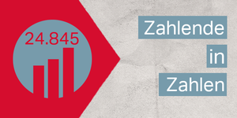

Im Dannenröder Wald ist am Sonntag eine Person verletzt worden. Aktivist:innen werfen der Polizei vor, ein sicherndes Stahlseil gekappt zu haben.
Der wissenschaftliche Beirat fordert eine „Renaturierung von Landökosystemen“. Wälder und Feuchtgebiete sollen wiederhergestellt werden.
Peking beschließt einen Pakt mit den großen Wirtschaftsnationen der Asien-Pazifik-Region. Die Gemeinschaft will bald auch Europa überholen.

Die erste digitale Verleihung des taz-Panterpreises ist über die Bühne gegangen. Eine Aktivistin aus der Amazonasregion erhielt den Leser:innenpreis.
Solange Patient*innen nicht aktiv widersprechen, sollen ihre Behandlungsdaten Forscher*innen zur Verfügung stehen. Bislang ist Zustimmung nötig.
An jedem Freitag, den 13., gehen Arbeitnehmer:innen für ihre Rechte auf die Straße. Auch Michael Gläser, Ex-Betriebsrat bei der Coffeeshop-Kette.
Viele Berliner Immobilien gehören Finanzmarktprofis. Wer das Grundrecht auf Wohnen will, muss die Eigentumsverhältnisse kennen.
Ein Vorstoß der Deutschen Bank, Abgaben auf das Homeoffice einzuführen, sorgt für Verwunderung und Spott. Erwartete Einnahmen: 15,9 Milliarden Euro.
Ärger im EU-Parlament: Abgeordnete kritisieren die fehlende Offenlegung der Vereinbarung mit den Pharmafirmen Biontech und Pfizer.
Machen Sie mit bei taz zahl ich und unterstützen Sie den Online-Journalismus der taz.
Weniger Anmeldungen im Oktober, ein Grund hierfür ist leider das neue Konsens-Tool auf taz.de.
Unser exklusives Testabo zum Fixpreis bietet ihnen die tägliche App-Ausgabe und die gedruckte taz am Wochenende. Je früher sie bestellen, desto mehr taz gibts fürs Geld.

In „Das Gift der Ungleichheit“ sucht Verdi-Chefökonom Dierk Hirschel nach Wegen, den Kapitalismus zu bändigen.

Joe Biden ist noch nicht US-Präsident, er hat bisher weder Personal noch Programm. Aber wir wissen schon, dass er die Welt nicht retten wird.
Bewohner*innen und die Tourismusbranche Goas sind in Sorge: Die Regierung plant, die Region zum Umschlagplatz für den fossilen Brennstoff auszubauen.

Die Rodungen im Wald kommen nur langsam voran. Erste Schneisen sind geschlagen. Die Besetzer*innen wollen stärker mit „spontanen Aktionen“ stören.
Die Erderwärmung bedroht uns alle. Die taz berichtet daher noch intensiver über die Klimakrise. Alle Texte zum Thema finden Sie unter taz.de/klimawandel.
Zudem bieten wir Ihnen das aktivistische Klima-Abo: Lesen Sie 10 Wochen die taz für nur 10 Euro. Davon geht 1 Euro als Spende an das Mangroven & Bienen Projekt in Nhangau/Mosambik.
Weil sie in Russland von Haft bedroht ist, verließ Alexandra Korolewa das Land. Nun gab ihr ein russisches Gericht recht.
Das Bundesverfassungsgericht verlangt eine faire Entschädigung für den Atomkonzern – auch weil der Bundestag zuvor gepatzt hat.
Eine Umschichtung der Staatshilfen würde laut einer Greenpeace-Rechnung nicht nur dem Haushalt gut tun – sondern auch dem Klima.
taz FUTURZWEI versteht Zukunft als Zentrum des Politischen und liefert Analysen, Stichworte und Debatten zur Zeit.
Zwei fleischlose Tage pro Woche, um das Klima zu schützen? Nach lauter Kritik findet Kopenhagen die eigene Idee nicht mehr gut.
Wer klug ist, macht jetzt Großeinkäufe. Und wer über Hackenporsches lästert, ist ungefähr so doof wie jemand, der übers sogenannte Hamstern herzieht.
Laut einer neuen Studie geben Trinkgefäße aus Kunststoff für Babys viel Mikroplastik ab. Mögliche Folgen für die Gesundheit sind noch unklar.
Für Sie ist politische Rendite wichtiger als Steuervorteile und finanzieller Gewinn? Werden Sie Mitglied der taz Genossenschaft.
Fast jeder zweite Arbeiter der Branche ist über Subfirmen angestellt. Das zeigen Regierungsangaben. Ein Verbot ist noch möglich, sagen Gewerkschafter.
Besonders die unteren Lohngruppen profitieren vom Tarifabschluss. Pflegekräfte erhalten bis zu zehn Prozent mehr.
Am Donnerstag beginnt die dritte Verhandlungsrunde für die Beschäftigten von Bund und Kommunen. Beide Seiten stehen unter enormem Einigungsdruck.
Das Notbudget für die Busbranche konnte bislang nicht voll ausgeschöpft werden. Dabei leidet diese besonders stark unter den Beschränkungen.
Deutschlands Spitzenpolitiker*innen lassen sich immer noch in CO2-Schleudern durchs Land kutschieren. Das rügt die Deutsche Umwelthilfe.
Flugtaxis stehen vor dem kommerziellen Durchbruch. Das zeigt eine Partnerschaft des deutschen Start-ups Volocopter mit Japan Airlines.
Eine US-Studie zeigt, dass Restaurants ein erhebliches Ansteckungsrisiko bergen könnten. Ärmere sind beim Einkaufen besonders gefährdet.
Virologen geben Entwarnung: Das mutierte Coronavirus bei Nerzen stellt wohl keine Gefahr für die Impfstoffentwicklung dar.
Menschen mit „signifikant erhöhtem Risiko“ sollen den Vortritt bekommen. Die Impfkommission entscheidet außerdem über wichtige Berufsgruppen.
Die EU plant, die Verschlüsselung von Messenger-Diensten auszuhebeln, wie ein geleaktes Dokument zeigt. Bürgerrechtler:innen protestieren.
Eine Updatepflicht für elektronische Geräte ist sinnvoll. Nachhaltig wird es aber erst, wenn die Aktualisierungszyklen möglichst lange laufen.
Ein Gesetzentwurf sieht vor, dass Smartphones und andere vernetzte Geräte Updates bekommen müssen. Doch zentrale Fragen bleiben offen.